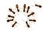

Ants teach networking


Animals teach networking like we already see then ants teach us networking also. In fact, they leverage so smartly graph networking for navigation and communication like the navigation mesh we use for building games. Ant race could be this simple game idea where you race with other ants that be controlled by your friends. What if you were ants in a community or tribes of ants? what if it was an MMORPG game? The excellent game designer Will wright learned a lot about ants for building SimCity and he designed a game about ants. Ant race could be as simple as taking this picture
as a sprite and printing it on a white background and building this simple game engine that allows the player to control its speed and direction with keyboard or joystick inputs. Each racing ant could have specific colors. Up to you to come up with creative obstacles.
This a cool exercise to do like this one.